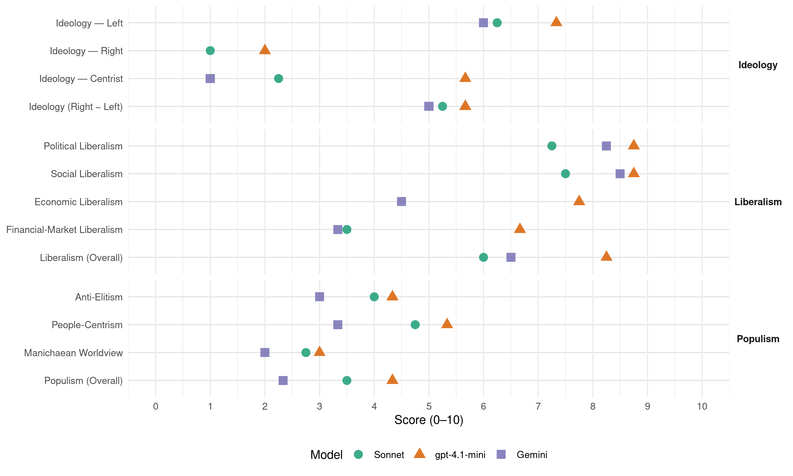

SPD (Germany, 2013)
manifesto_id 41320_201309
Get full text: This site shows derived annotations and short verbatim quotes only. The full manifesto text is © Manifesto Project / WZB — obtain it via manifesto-project.wzb.eu using the manifesto_id above.
Headline scores
| Dimension | Sonnet | gpt-4.1-mini | Gemini |
|---|---|---|---|
| Populism (Overall) | 3.5 | 4.3 | 2.3 |
| Anti-Elitism | 4.0 | 4.3 | 3.0 |
| People-Centrism | 4.8 | 5.3 | 3.3 |
| Manichaean Worldview | 2.8 | 3.0 | 2.0 |
| Ideology (Right − Left) | 5.2 | 5.7 | 5.0 |
| Liberalism (Overall) | 6.0 | 8.2 | 6.5 |
| Political Liberalism | 7.2 | 8.8 | 8.2 |
| Social Liberalism | 7.5 | 8.8 | 8.5 |
| Economic Liberalism | – | 7.8 | 4.5 |
| Financial-Market Liberalism | 3.5 | 6.7 | 3.3 |
Evidence per dimension
Economic Liberalism
Gemini · score 6.0 · verified · chunk 1
“Soziale Marktwirtschaft neu begründen und”
sorgen. Wir wollen die Soziale Marktwirtschaft neu begründen und ein soziales Europa schaffen. Ein neues soziales
Gemini · score 4.0 · verified · chunk 2
“eine Zerschlagung und Privatisierung”
Mittel in das Schienennetz und Bahnhofssanierungen fließen. Eine Zerschlagung und Privatisierung, auch Teilprivatisierung der Deutschen Bahn lehnen
Gemini · score 4.0 · verified · chunk 3
“ungestüme Privatisierungspolitik der letzten Jahre”
Infrastruktur und Energiewende. Die ungestüme Privatisierungspolitik der letzten Jahre hat sich nicht selten als teurer Irrweg
Gemini · score 4.0 · verified · chunk 4
“faire Wettbewerbsregeln für öffentliche Unternehmen”
bereitgestellt wird. Daher setzten wir uns für faire Wettbewerbsregeln für öffentliche Unternehmen im nationalen und europäischen Recht ein.
gpt-4.1-mini · score 8.0 · verified · chunk 1
“Wir wollen die Soziale Marktwirtschaft neu begründen und ein soziales Europa schaffen”
Heute heißt das, wieder für ein neues soziales Gleichgewicht in unserem Land und in Europa zu sorgen. Wir wollen die Soziale Marktwirtschaft neu begründen und ein soziales Europa schaffen.
gpt-4.1-mini · score 8.0 · verified · chunk 2
“Die Neubegründung der Sozialen Marktwirtschaft baut auf einem gerechten Steuersystem auf”
Die Neubegründung der Sozialen Marktwirtschaft baut auf einem gerechten Steuersystem auf. Unsere Politik steht in der Pflicht einer soliden Finanzierung. Es darf keine Lastenverlagerung auf künftige Generationen geben.
gpt-4.1-mini · score 7.0 · verified · chunk 3
“Die Neubegründung der Sozialen Marktwirtschaft baut auf einem gerechten Steuersystem auf.”
Stabile Staatsfinanzen bilden die Grundlage dafür, dass der Staat diese Aufgaben erfüllen kann. Sie sind auch Voraussetzung für nachhaltiges und qualitatives Wachstum, um Wohlstand für alle zu schaffen und zu sichern. Die Neubegründung der Sozialen Marktwirtschaft baut auf einem gerechten Steuersystem auf.
gpt-4.1-mini · score 8.0 · verified · chunk 4
“Wir wollen die Soziale Marktwirtschaft neu begründen und gemeinsam ein neues soziales Gleichgewicht schaffen.”
Unser Wahlprogramm folgt einem einfachen Grundsatz: Wir wollen regieren zum Wohle aller Bürgerinnen und Bürger in Deutschland. Wir wollen die Soziale Marktwirtschaft neu begründen und gemeinsam ein neues soziales Gleichgewicht schaffen.
Sonnet · score 4.0 · mixed · chunk 1
“Wettbewerbs- und Kartellrecht”
Wir brauchen eine wirkungsvollere Wettbewerbs- und Kartellpolitik mit Augenmaß. Das Wettbewerbs- und Kartellrecht dient dazu, die Interessen der Verbraucherinnen und Verbraucher zu wahren.
Sonnet · score 5.0 · mixed · chunk 2
“Zerschlagung und Privatisierung…der Deutschen Bahn lehnen wir ab”
Eine Zerschlagung und Privatisierung, auch Teilprivatisierung der Deutschen Bahn lehnen wir ab. Wir wollen den Schutz vor Bahn- und anderem Verkehrslärm verbessern
Sonnet · score 4.0 · mixed · chunk 3
“Die ungestüme Privatisierungspolitik der letzten Jahre”
Die ungestüme Privatisierungspolitik der letzten Jahre hat sich nicht selten als teurer Irrweg erwiesen. Wir widersprechen Privatisierungen insbesondere, wo sie den Zugang zu den öffentlichen Gütern behindern.
Sonnet · score 4.0 · mixed · chunk 4
“kalten Wettbewerbseuropa muss endlich”
Dem kalten Wettbewerbseuropa muss endlich eine sozial verantwortlich handelnde EU entgegengesetzt werden.
Financial-Market Liberalism
Gemini · score 4.0 · verified · chunk 1
“umfassende Regulierung der Finanzmärkte”
Unsere Maßnahmen zur umfassenden Regulierung der Finanzmärkte. Wir wollen die Finanztransaktionssteuer. Um die
Gemini · score 3.0 · verified · chunk 3
“Finanztransaktionssteuer mit einer möglichst breiten Bemessungsgrundlage”
unterwerfen. Wir wollen eine Finanztransaktionssteuer mit einer möglichst breiten Bemessungsgrundlage und niedrigen Steuersätzen. Das heißt für
Gemini · score 3.0 · verified · chunk 4
“einheitliches und zuverlässiges Aufsichtssystem für alle Teilbereiche des Versicherungs- und Finanzmarktes”
garantieren – unabhängig davon, wo Produkte gekauft werden. Dazu braucht es ein einheitliches und zuverlässiges Aufsichtssystem für alle Teilbereiche des Versicherungs- und Finanzmarktes. Dazu werden wir die staatlichen Institutionen
gpt-4.1-mini · score 6.0 · verified · chunk 1
“Wir wollen eine europäische Finanztransaktionssteuer einführen”
Wir wollen die Finanztransaktionssteuer. Um die Finanzmarktakteure endlich an den Kosten der Krise und an der Finanzierung des Gemeinwohls zu beteiligen, werden wir eine europäische Finanztransaktionssteuer einführen – in einem ersten Schritt im Rahmen der verstärkten europäischen Zusammenarbeit in der EU.
gpt-4.1-mini · score 7.0 · verified · chunk 3
“Wir wollen eine Finanztransaktionssteuer mit einer möglichst breiten Bemessungsgrundlage”
Wir wollen eine Finanztransaktionssteuer mit einer möglichst breiten Bemessungsgrundlage und niedrigen Steuersätzen. Das heißt für uns, dass alle Transaktionen von Aktien, Anleihen, Derivaten und Devisen einer Besteuerung unterliegen müssen.
gpt-4.1-mini · score 7.0 · verified · chunk 4
“Wir begrüßen es, dass es durch sozialdemokratischen Druck in Europa gelungen ist, die Finanztransaktionssteuer in elf EU-Mitgliedsstaaten vorzubereiten.”
Die SPD begrüßt es, dass es durch sozialdemokratischen Druck in Europa gelungen ist, die Finanztransaktionssteuer in elf EU-Mitgliedsstaaten vorzubereiten. In der Regierung werden wir die anderen Euro- und EU-Staaten ermutigen, auch diese Steuer einzuführen, durch die Spekulanten einen gerechten Anteil an der öffentlichen Finanzierung leisten.
Sonnet · score 3.0 · verified · chunk 1
“Finanztransaktionssteuer”
Um die Finanzmarktakteure endlich an den Kosten der Krise und an der Finanzierung des Gemeinwohls zu beteiligen, werden wir eine europäische Finanztransaktionssteuer einführen – in einem ersten Schritt im Rahmen der verstärkten europäischen Zusammenarbeit in der EU.
Sonnet · score 5.0 · verified · chunk 2
“europäische Emissionshandel ist zu reaktivieren”
Der daniederliegende europäische Emissionshandel ist zu reaktivieren. Er muss wieder das zentrale marktwirtschaftliche Instrument werden
Sonnet · score 3.0 · verified · chunk 3
“Wir wollen eine Finanztransaktionssteuer”
Wir wollen eine Finanztransaktionssteuer mit einer möglichst breiten Bemessungsgrundlage und niedrigen Steuersätzen. Das heißt für uns, dass alle Transaktionen von Aktien, Anleihen, Derivaten und Devisen einer Besteuerung unterliegen müssen.
Sonnet · score 3.0 · verified · chunk 4
“Bankautomatengebühren auf maximal zwei Euro deckeln”
Wir werden die Bankautomatengebühren auf maximal zwei Euro deckeln, die Banken zu sicherem Onlinebanking ohne Mehrkosten verpflichten, angemessene Dispozinsen in Höhe von maximal acht Prozent
Political Liberalism
Gemini · score 9.0 · verified · chunk 1
“älteste demokratische Partei Deutschlands und”
Jubiläum zusammen: Die SPD feiert ihr 150jähriges Bestehen. Damit sind wir die älteste demokratische Partei Deutschlands und die traditionsreichste sozialdemokratische
Gemini · score 8.0 · verified · chunk 2
“eine freie Presse und ein unabhängiger Journalismus”
private Fernseh- und Rundfunksender ein. Eine freie Presse und ein unabhängiger Journalismus gehören zum unverzichtbaren Kern einer Demokratie.
Gemini · score 8.0 · verified · chunk 3
“unabhängiger Journalismus gehören zum unverzichtbaren Kern”
Eine freie Presse und ein unabhängiger Journalismus gehören zum unverzichtbaren Kern einer Demokratie. Jedoch bedrohen die ökonomischen
Gemini · score 8.0 · verified · chunk 4
“Demokratie als gesellschaftsprinzip Für die Sozialdemokratie”
Gentechnik. Viii. DemokRatie leBen Viii.1 Demokratie als gesellschaftsprinzip Für die Sozialdemokratie ist Demokratie mehr als Wahlen und
gpt-4.1-mini · score 9.0 · verified · chunk 1
“Seit ihrer Gründung 1863 kämpfen Millionen unserer Mitglieder für Freiheit, Demokratie und Gerechtigkeit”
Die SPD feiert ihr 150jähriges Bestehen. Damit sind wir die älteste demokratische Partei Deutschlands und die traditionsreichste sozialdemokratische Partei der Welt. Seit ihrer Gründung 1863 kämpfen Millionen unserer Mitglieder für Freiheit, Demokratie und Gerechtigkeit.
gpt-4.1-mini · score 9.0 · verified · chunk 2
“Unabhängige und vielfältige Medien sind ein Grundpfeiler für eine lebendige Demokratie”
Unabhängige und vielfältige Medien sind ein Grundpfeiler für eine lebendige Demokratie und somit unverzichtbarer Bestandteil unseres Alltags. Sie bieten Information, Kommunikation, sichern politische Teilhabe und Zugang zu Wissen.
gpt-4.1-mini · score 8.0 · verified · chunk 3
“Unabhängige und vielfältige Medien sind ein Grundpfeiler für eine lebendige Demokratie”
Unabhängige und vielfältige Medien sind ein Grundpfeiler für eine lebendige Demokratie und somit unverzichtbarer Bestandteil unseres Alltags. Sie bieten Information, Kommunikation, sichern politische Teilhabe und Zugang zu Wissen.
gpt-4.1-mini · score 9.0 · verified · chunk 4
“Wir wollen unsere Demokratie stärken, damit das Vertrauen der Bürgerinnen und Bürger gegenüber Politik und staatlichen Institutionen wieder wächst”
Wir wollen unsere Demokratie stärken, damit das Vertrauen der Bürgerinnen und Bürger gegenüber Politik und staatlichen Institutionen wieder wächst, damit wieder mehr Menschen zur Wahl gehen und damit politische Entscheidungen mehr Legitimität erhalten.
Sonnet · score 7.0 · verified · chunk 1
“Demokratie stärken und das Vertrauen daraus zurückgewinnen”
Wir leben heute in einer radikal veränderten Welt. Deshalb wollen wir die Demokratie stärken und das Vertrauen daraus zurückgewinnen, dass demokratisches Engagement und demokratische Politik unser Zusammenleben besser und gerechter machen können.
Sonnet · score 7.0 · verified · chunk 2
“Zugang zum Internet als demokratisches Bürgerrecht”
Uns ist zuallererst der Zugang zum Internet als demokratisches Bürgerrecht wichtig. Wir brauchen dafür die Stärkung der Bürgerrechte durch wirksamen Datenschutz
Sonnet · score 7.0 · verified · chunk 3
“Unabhängige und vielfältige Medien sind ein Grundpfeiler für eine lebendige Demokratie”
Unabhängige und vielfältige Medien sind ein Grundpfeiler für eine lebendige Demokratie und somit unverzichtbarer Bestandteil unseres Alltags.
Sonnet · score 8.0 · verified · chunk 4
“Demokratie stärken, damit das Vertrauen”
Wir wollen unsere Demokratie stärken, damit das Vertrauen der Bürgerinnen und Bürger gegenüber Politik und staatlichen Institutionen wieder wächst
Liberalism (Overall)
Gemini · score 7.0 · verified · chunk 1
“älteste demokratische Partei Deutschlands und”
Jubiläum zusammen: Die SPD feiert ihr 150jähriges Bestehen. Damit sind wir die älteste demokratische Partei Deutschlands und die traditionsreichste sozialdemokratische
Gemini · score 7.0 · verified · chunk 2
“eine freie Presse und ein unabhängiger Journalismus”
private Fernseh- und Rundfunksender ein. Eine freie Presse und ein unabhängiger Journalismus gehören zum unverzichtbaren Kern einer Demokratie.
Gemini · score 6.0 · verified · chunk 3
“unabhängiger Journalismus gehören zum unverzichtbaren Kern”
Eine freie Presse und ein unabhängiger Journalismus gehören zum unverzichtbaren Kern einer Demokratie. Jedoch bedrohen die ökonomischen
Gemini · score 6.0 · verified · chunk 4
“Demokratie als gesellschaftsprinzip Für die Sozialdemokratie”
Gentechnik. Viii. DemokRatie leBen Viii.1 Demokratie als gesellschaftsprinzip Für die Sozialdemokratie ist Demokratie mehr als Wahlen und
gpt-4.1-mini · score 8.0 · verified · chunk 1
“Seit ihrer Gründung 1863 kämpfen Millionen unserer Mitglieder für Freiheit, Demokratie und Gerechtigkeit”
Die SPD feiert ihr 150jähriges Bestehen. Damit sind wir die älteste demokratische Partei Deutschlands und die traditionsreichste sozialdemokratische Partei der Welt. Seit ihrer Gründung 1863 kämpfen Millionen unserer Mitglieder für Freiheit, Demokratie und Gerechtigkeit.
gpt-4.1-mini · score 9.0 · verified · chunk 2
“Unabhängige und vielfältige Medien sind ein Grundpfeiler für eine lebendige Demokratie”
Unabhängige und vielfältige Medien sind ein Grundpfeiler für eine lebendige Demokratie und somit unverzichtbarer Bestandteil unseres Alltags. Sie bieten Information, Kommunikation, sichern politische Teilhabe und Zugang zu Wissen.
gpt-4.1-mini · score 8.0 · verified · chunk 3
“Unabhängige und vielfältige Medien sind ein Grundpfeiler für eine lebendige Demokratie”
Unabhängige und vielfältige Medien sind ein Grundpfeiler für eine lebendige Demokratie und somit unverzichtbarer Bestandteil unseres Alltags. Sie bieten Information, Kommunikation, sichern politische Teilhabe und Zugang zu Wissen.
gpt-4.1-mini · score 8.0 · verified · chunk 4
“Wir wollen unsere Demokratie stärken, damit das Vertrauen der Bürgerinnen und Bürger gegenüber Politik und staatlichen Institutionen wieder wächst”
Wir wollen unsere Demokratie stärken, damit das Vertrauen der Bürgerinnen und Bürger gegenüber Politik und staatlichen Institutionen wieder wächst, damit wieder mehr Menschen zur Wahl gehen und damit politische Entscheidungen mehr Legitimität erhalten.
Sonnet · score 5.0 · mixed · chunk 1
“Soziale Marktwirtschaft neu begründen”
Demgegenüber strebt die Sozialdemokratische Partei Deutschlands eine Gesellschaft an, die den Menschen in den Mittelpunkt stellt. Wir wollen die Soziale Marktwirtschaft neu begründen und ein soziales Europa schaffen.
Sonnet · score 6.0 · verified · chunk 2
“Gleichheitsrechte im Grundgesetz Art. 3 um die sexuelle Identität ergänzen”
Deswegen wollen wir die Gleichheitsrechte im Grundgesetz Art. 3 um die sexuelle Identität ergänzen. Wir gehen entschieden vor gegen Homophobie
Sonnet · score 5.0 · mixed · chunk 3
“Unabhängige und vielfältige Medien sind ein Grundpfeiler für eine lebendige Demokratie”
Unabhängige und vielfältige Medien sind ein Grundpfeiler für eine lebendige Demokratie und somit unverzichtbarer Bestandteil unseres Alltags.
Sonnet · score 6.0 · verified · chunk 4
“Transparenz und Partizipation”
Voraussetzung für eine demokratische und offene Gesellschaft sind demokratische Kultur und Öffentlichkeit genauso wie Transparenz und Partizipation.
Anti-Elitism
Gemini · score 3.0 · verified · chunk 1
“nicht wirtschaftlichen Einzelinteressen. Die stärkste Lobby”
Die Politik muss dem Gemeinwohl verpflichtet sein und nicht wirtschaftlichen Einzelinteressen. Die stärkste Lobby in Deutschland müssen endlich wieder die Bürgerinnen
Gemini · score 4.0 · verified · chunk 3
“Rücknahme der schwarz-gelben Klientelgesetze”
Kommunen profitieren anteilig von der Rücknahme der schwarz-gelben Klientelgesetze, vom Subventionsabbau und der Einführung
Gemini · score 2.0 · verified · chunk 4
“die Strafbarkeit der Abgeordnetenbestechung blockieren”
UN-Antikorruptionskonvention noch nicht ratifiziert, da CDU/CSU und FDP die Strafbarkeit der Abgeordnetenbestechung blockieren. Wir werden unmittelbar nach der Wahl
gpt-4.1-mini · score 7.0 · verified · chunk 1
“Die stärkste Lobby in Deutschland müssen endlich wieder die Bürgerinnen und Bürger sein”
Die Politik muss dem Gemeinwohl verpflichtet sein und nicht wirtschaftlichen Einzelinteressen. Die stärkste Lobby in Deutschland müssen endlich wieder die Bürgerinnen und Bürger sein. Wir versprechen, dass wir dieses neue Miteinander und das Gemeinwohl in allen vor uns liegenden Herausforderungen unseres Landes wieder zur Leitlinie unseres Handelns machen werden.
gpt-4.1-mini · score 3.0 · verified · chunk 3
“Die SPD ist die Partei der Arbeit – auch der kreativen Arbeit.”
Denn am Ende steht die Vision eines gerechten und sozialen Raumes, die nur dann Wirklichkeit werden kann, wenn sich ein wesentlicher Teil der Gesellschaft auf einheitliche Regeln einigt und damit einen gesellschaftlichen Konsens abbildet. Die SPD ist die Partei der Arbeit – auch der kreativen Arbeit. Wir haben vor gut dreißig Jahren die Künstlersozialversicherung auf den Weg gebracht.
gpt-4.1-mini · score 3.0 · verified · chunk 4
“Die groteske „Extremismusklausel” wird abgeschafft.”
Die derzeitige Gängelung, die verqueren Verdächtigungen und bürokratischen Popanze der Bundesregierung aus CDU/CSU und FDP werden wir beenden. Die groteske „Extremismusklausel” wird abgeschafft.
Sonnet · score 6.0 · verified · chunk 1
“Konservative und liberale Regierungen wie in Deutschland schützen lieber Banken und Finanzjongleure”
Nichts wirkt dabei verheerender auf die öffentliche Moral als die Tatsache, dass die Verursacher der gigantischen Schuldenberge bis heute kaum zu deren Beseitigung beitragen müssen. Konservative und liberale Regierungen wie in Deutschland schützen lieber Banken und Finanzjongleure, als die Menschen vor deren rücksichtslosen Spekulationen.
Sonnet · score 3.0 · verified · chunk 2
“eklatante Unfähigkeit der Bundesregierung zur Steuerung”
Die eklatante Unfähigkeit der Bundesregierung zur Steuerung und Koordinierung hat dazu geführt, dass es in Deutschland keine abgestimmte Energiepolitik gibt
Sonnet · score 3.0 · verified · chunk 3
“Besondere steuerliche Privilegien für einzelne Interessengruppen”
Besondere steuerliche Privilegien für einzelne Interessengruppen, etwa Hoteliers und reiche Erben, die CDU/CSU und FDP in den vergangenen Jahren neu geschaffen haben, werden wir zurücknehmen.
Sonnet · score 4.0 · verified · chunk 4
“die Großen laufen lässt”
Wir wollen eine Offensive gegen Wirtschafts- und Steuerkriminalität: Wir lassen nicht zu, dass man die Großen laufen lässt.
Ideology — Centrist
Gemini · score 1.0 · verified · chunk 4
“regieren zum Wohle aller Bürgerinnen und Bürger”
folgt einem einfachen Grundsatz: Wir wollen regieren zum Wohle aller Bürgerinnen und Bürger in Deutschland. Wir wollen etwas bewegen
gpt-4.1-mini · score 6.0 · verified · chunk 1
“Wir wollen ein neues Miteinander in unserem Land und vom Zusammenleben in Europa und in der Welt”
Für den Fall unserer Regierungsübernahme bei der Bundestagswahl 2013 wollen wir deshalb in diesem Regierungsprogramm keine unrealistischen Wahlversprechen vorstellen, sondern vor allem unsere Idee von einem neuen Miteinander in unserem Land und vom Zusammenleben in Europa und in der Welt.
gpt-4.1-mini · score 5.0 · verified · chunk 3
“ein wesentlicher Teil der Gesellschaft auf einheitliche Regeln einigt”
Denn am Ende steht die Vision eines gerechten und sozialen Raumes, die nur dann Wirklichkeit werden kann, wenn sich ein wesentlicher Teil der Gesellschaft auf einheitliche Regeln einigt und damit einen gesellschaftlichen Konsens abbildet.
gpt-4.1-mini · score 6.0 · verified · chunk 4
“Wir wollen mehr Menschen an der politischen Willensbildung teilhaben lassen”
Wir wollen mehr Menschen an der politischen Willensbildung teilhaben lassen und setzen uns dafür ein, dass Menschen, die unter umfassender Betreuung stehen, das Wahlrecht nicht automatisch entzogen wird.
Sonnet · score 2.0 · verified · chunk 1
“Wir wollen das Gemeinwohl in den Mittelpunkt unserer Politik stellen”
Deshalb haben wir als erste Partei in Deutschland in einem breit angelegten Bürgerdialog die Menschen in Deutschland gefragt, was in unserem Land besser werden muss. Wir wollen das Gemeinwohl in den Mittelpunkt unserer Politik stellen.
Sonnet · score 2.0 · verified · chunk 2
“Neubegründung der Sozialen Marktwirtschaft baut auf einem gerechten Steuersystem”
Die Neubegründung der Sozialen Marktwirtschaft baut auf einem gerechten Steuersystem auf. Unsere Politik steht in der Pflicht einer soliden Finanzierung
Sonnet · score 2.0 · verified · chunk 3
“einen fairen und gerechten Ausgleich der Interessen”
Unser Ziel ist es, einen fairen und gerechten Ausgleich der Interessen von Urhebern, Verwertern und Nutzern sicherzustellen
Sonnet · score 3.0 · verified · chunk 4
“Partei in der Mitte der Gesellschaft”
Die SPD ist die Partei in der Mitte der Gesellschaft und für das Miteinander in Deutschland.
Ideology — Left
Gemini · score 7.0 · verified · chunk 1
“Kampf um soziale Gerechtigkeit bleibt”
keine Sozialstaatlichkeit in unserer Verfassung. Der Kampf um soziale Gerechtigkeit bleibt daher eine Daueraufgabe. Die SPD ist und
Gemini · score 8.0 · verified · chunk 3
“Bezieher hoher Einkommen und Vermögende stärker”
Gleichgewicht in der Gesellschaft. Wir wollen zukünftig Bezieher hoher Einkommen und Vermögende stärker zur Finanzierung unseres Gemeinwesens heranziehen
Gemini · score 3.0 · verified · chunk 4
“dem Neoliberalismus und Marktradikalismus sein Modell”
Ort sein und noch mehr werden, der dem Neoliberalismus und Marktradikalismus sein Modell einer sozialen und nachhaltigen Demokratie
gpt-4.1-mini · score 8.0 · verified · chunk 1
“Wir wollen mehr Verteilungsgerechtigkeit bei Einkommen und Vermögen erreichen”
Wir wollen deshalb die Sozialpartnerschaft und ihre Institutionen stärkern. Wir wollen mehr Verteilungsgerechtigkeit bei Einkommen und Vermögen erreichen. Dazu tragen zuerst gerechte Löhne bei, aber auch eine Politik, die öffentliche Aufgaben gerecht finanziert.
gpt-4.1-mini · score 7.0 · verified · chunk 3
“Steuerpolitik ist für uns Gesellschaftspolitik. Sie muss gerecht und zugleich wirtschaftlich vernünftig sein.”
Steuerpolitik ist für uns Gesellschaftspolitik. Sie muss gerecht und zugleich wirtschaftlich vernünftig sein. Und sie muss den Lebensentwürfen in einer modernen Gesellschaft entsprechen. Anspruch unserer Steuerpolitik ist es, die Förderung wirtschaftlicher Dynamik mit sozialer Gerechtigkeit zu verbinden.
gpt-4.1-mini · score 7.0 · verified · chunk 4
“Europa muss der Ort sein und noch mehr werden, der dem Neoliberalismus und Marktradikalismus sein Modell einer sozialen und nachhaltigen Demokratie und Marktwirtschaft entgegenstellt.”
Wir wissen: Scheitert Europa, dann scheitert auch das europäische Gesellschaftsmodell, das auf Solidarität und einen fairen Ausgleich der Interessen angelegt ist. Europa muss der Ort sein und noch mehr werden, der dem Neoliberalismus und Marktradikalismus sein Modell einer sozialen und nachhaltigen Demokratie und Marktwirtschaft entgegenstellt.
Sonnet · score 7.0 · verified · chunk 1
“flächendeckenden gesetzlichen Mindestlohn”
Wir wollen einen gesetzlichen, flächendeckenden Mindestlohn in Höhe von mindestens 8,50 Euro einführen – einheitlich in Ost und West, der auf Vorschlag einer vom BMAS eingesetzten Mindestlohnkommission jährlich angepasst wird.
Sonnet · score 5.0 · verified · chunk 2
“Entgeltgleichheitsgesetz die Betriebe verpflichten, Lohndiskriminierung”
Wir werden mit einem Entgeltgleichheitsgesetz die Betriebe verpflichten, Lohndiskriminierung von Frauen aufzudecken und zu beenden
Sonnet · score 7.0 · verified · chunk 3
“Wir wollen zukünftig Bezieher hoher Einkommen und Vermögende stärker”
Wir wollen zukünftig Bezieher hoher Einkommen und Vermögende stärker zur Finanzierung unseres Gemeinwesens heranziehen. Dazu wollen wir den Spitzensteuersatz von 42 bzw. 45 Prozent auf 49 Prozent erhöhen.
Sonnet · score 6.0 · verified · chunk 4
“Neoliberalismus und Marktradikalismus”
Europa muss der Ort sein und noch mehr werden, der dem Neoliberalismus und Marktradikalismus sein Modell einer sozialen und nachhaltigen Demokratie entgegenstellt.
Ideology (Right − Left)
Gemini · score 6.0 · verified · chunk 1
“Kampf um soziale Gerechtigkeit bleibt”
keine Sozialstaatlichkeit in unserer Verfassung. Der Kampf um soziale Gerechtigkeit bleibt daher eine Daueraufgabe. Die SPD ist und
Gemini · score 7.0 · verified · chunk 3
“Bezieher hoher Einkommen und Vermögende stärker”
Gleichgewicht in der Gesellschaft. Wir wollen zukünftig Bezieher hoher Einkommen und Vermögende stärker zur Finanzierung unseres Gemeinwesens heranziehen
Gemini · score 2.0 · verified · chunk 4
“dem Neoliberalismus und Marktradikalismus sein Modell”
Ort sein und noch mehr werden, der dem Neoliberalismus und Marktradikalismus sein Modell einer sozialen und nachhaltigen Demokratie
gpt-4.1-mini · score 7.0 · verified · chunk 1
“Wir wollen mehr Verteilungsgerechtigkeit bei Einkommen und Vermögen erreichen”
Wir wollen deshalb die Sozialpartnerschaft und ihre Institutionen stärkern. Wir wollen mehr Verteilungsgerechtigkeit bei Einkommen und Vermögen erreichen. Dazu tragen zuerst gerechte Löhne bei, aber auch eine Politik, die öffentliche Aufgaben gerecht finanziert.
gpt-4.1-mini · score 5.0 · verified · chunk 3
“Steuerpolitik ist für uns Gesellschaftspolitik. Sie muss gerecht und zugleich wirtschaftlich vernünftig sein.”
Steuerpolitik ist für uns Gesellschaftspolitik. Sie muss gerecht und zugleich wirtschaftlich vernünftig sein. Und sie muss den Lebensentwürfen in einer modernen Gesellschaft entsprechen. Anspruch unserer Steuerpolitik ist es, die Förderung wirtschaftlicher Dynamik mit sozialer Gerechtigkeit zu verbinden.
gpt-4.1-mini · score 5.0 · verified · chunk 4
“Europa muss der Ort sein und noch mehr werden, der dem Neoliberalismus und Marktradikalismus sein Modell einer sozialen und nachhaltigen Demokratie und Marktwirtschaft entgegenstellt.”
Wir wissen: Scheitert Europa, dann scheitert auch das europäische Gesellschaftsmodell, das auf Solidarität und einen fairen Ausgleich der Interessen angelegt ist. Europa muss der Ort sein und noch mehr werden, der dem Neoliberalismus und Marktradikalismus sein Modell einer sozialen und nachhaltigen Demokratie und Marktwirtschaft entgegenstellt.
Sonnet · score 6.0 · verified · chunk 1
“Verteilungsgerechtigkeit bei Einkommen und Vermögen”
Wir wollen mehr Verteilungsgerechtigkeit bei Einkommen und Vermögen erreichen. Dazu tragen zuerst gerechte Löhne bei, aber auch eine Politik, die öffentliche Aufgaben gerecht finanziert.
Sonnet · score 4.0 · verified · chunk 2
“Entgeltgleichheitsgesetz die Betriebe verpflichten, Lohndiskriminierung”
Wir werden mit einem Entgeltgleichheitsgesetz die Betriebe verpflichten, Lohndiskriminierung von Frauen aufzudecken und zu beenden
Sonnet · score 6.0 · verified · chunk 3
“Wir wollen zukünftig Bezieher hoher Einkommen und Vermögende stärker”
Wir wollen zukünftig Bezieher hoher Einkommen und Vermögende stärker zur Finanzierung unseres Gemeinwesens heranziehen. Dazu wollen wir den Spitzensteuersatz erhöhen.
Sonnet · score 5.0 · verified · chunk 4
“sozialen und nachhaltigen Demokratie und Marktwirtschaft”
Europa muss der Ort sein, der dem Neoliberalismus und Marktradikalismus sein Modell einer sozialen und nachhaltigen Demokratie und Marktwirtschaft entgegenstellt.
Ideology — Right
gpt-4.1-mini · score 2.0 · verified · chunk 1
“Wir wollen kein Europa, das Spielball der Märkte ist, sondern eines, das im Interesse der Menschen handelt”
Das macht die Soziale Marktwirtschaft im Kern aus. Wir wollen kein Europa, das Spielball der Märkte ist, sondern eines, das im Interesse der Menschen handelt. Nur geeint und im festen Zusammenschluss der Europäischen Union hat Europa eine Chance im globalen Wettbewerb von Ideen und Werten, von Politik und Wirtschaft.
gpt-4.1-mini · score 2.0 · verified · chunk 4
“Wir wollen nicht länger zulassen, dass ihre mithin gewaltbereite Menschenfeindlichkeit auch noch durch Steuermittel finanzieren wird.”
Wir wollen nicht länger zulassen, dass ihre mithin gewaltbereite Menschenfeindlichkeit auch noch durch Steuermittel finanzieren wird. Klar ist aber auch: Kein NPD-Verbot, keine Sicherheitsbehörde ist so wirkungsvoll im Kampf gegen Rechtsextremismus wie eine wachsame und aktive Zivilgesellschaft.
Sonnet · score 1.0 · verified · chunk 2
“Deutschland ist ein Einwanderungsland und lebt von seiner Vielfalt”
Deutschland ist ein Einwanderungsland und lebt von seiner Vielfalt, dem Engagement und den Ideen der Menschen ganz unterschiedlicher Herkunft
Manichaean Worldview
Gemini · score 2.0 · verified · chunk 1
“nicht die Interessen anonymer Finanzmärkte”
die Probleme und Sorgen der Bürgerinnen und Bürger wieder in den Mittelpunkt der Politik stellen – und nicht die Interessen anonymer Finanzmärkte. Deshalb haben wir
gpt-4.1-mini · score 5.0 · mixed · chunk 1
“Konservative und liberale Regierungen wie in Deutschland schützen lieber Banken und Finanzjongleure, als die Menschen vor deren rücksichtslosen Spekulationen”
Nichts wirkt dabei verheerender auf die öffentliche Moral als die Tatsache, dass die Verursacher der gigantischen Schuldenberge bis heute kaum zu deren Beseitigung beitragen müssen. Konservative und liberale Regierungen wie in Deutschland schützen lieber Banken und Finanzjongleure, als die Menschen vor deren rücksichtslosen Spekulationen.
gpt-4.1-mini · score 3.0 · verified · chunk 4
“Die von der rechtsextremistischen Terrorgruppe „NSU” begangenen zehn Morde”
Die von der rechtsextremistischen Terrorgruppe „NSU” begangenen zehn Morde an türkisch- bzw. griechisch-stämmigen Bürgern und an einer Polizistin sowie die verübten Sprengstoffanschläge waren ein feiger Angriff auf rechtschaffende Mitbürger und zugleich ein Angriff auf unsere Demokratie.
Sonnet · score 4.0 · verified · chunk 1
“Gewinne privatisiert und Verluste der Allgemeinheit aufgebürdet”
Statt nach marktwirtschaftlichem Prinzip Risiko und Haftung in einer Hand zu lassen, hat der Marktradikalismus Gewinne privatisiert und Verluste der Allgemeinheit aufgebürdet. Er hat seine eigenen Grundlagen zerstört und weltweit Billionen von Schulden hinterlassen.
Sonnet · score 2.0 · verified · chunk 2
“Zick-Zack-Kurs ist sie zu einem unkalkulierbaren Risiko”
Mit ihrem Zick-Zack-Kurs ist sie zu einem unkalkulierbaren Risiko für Wirtschaftskraft und Arbeitsplätze geworden
Sonnet · score 2.0 · verified · chunk 3
“Steuerbetrug ist kein Kavaliersdelikt”
Steuerbetrug ist kein Kavaliersdelikt, sondern eine Straftat, die das Vertrauen in den Rechtsstaat untergräbt und den Zusammenhalt unserer Gesellschaft gefährdet.
Sonnet · score 3.0 · verified · chunk 4
“Reichtum für wenige”
X. Unsere Idee der Globalisierung: Gerechtigkeit für alle statt Reichtum für wenige
People-Centrism
Gemini · score 4.0 · verified · chunk 1
“Interessen, Nöte, Sorgen und Leidenschaften von Millionen Menschen”
Doch wir wissen genauso um die Interessen, Nöte, Sorgen und Leidenschaften von Millionen Menschen in Deutschland, die Hoffnung und Vertrauen in eine
Gemini · score 5.0 · verified · chunk 3
“Der Markt muss den Menschen dienen”
gerechten und solidarischen Gesellschaftspolitik. Der Markt muss den Menschen dienen, nicht umgekehrt. Dies gilt umso
Gemini · score 1.0 · verified · chunk 4
“regieren zum Wohle aller Bürgerinnen und Bürger”
folgt einem einfachen Grundsatz: Wir wollen regieren zum Wohle aller Bürgerinnen und Bürger in Deutschland. Wir wollen etwas bewegen
gpt-4.1-mini · score 8.0 · verified · chunk 1
“Diesen Menschen fühlen wir uns zuallererst verpflichtet. Für sie wollen wir Politik machen – mit dem „Blick von unten””
Wir wissen genauso um die Interessen, Nöte, Sorgen und Leidenschaften von Millionen Menschen in Deutschland, die Hoffnung und Vertrauen in eine starke Sozialdemokratie setzen. Diesen Menschen fühlen wir uns zuallererst verpflichtet. Für sie wollen wir Politik machen – mit dem „Blick von unten” und mit Leidenschaft und Beharrlichkeit.
gpt-4.1-mini · score 4.0 · verified · chunk 3
“ein wesentlicher Teil der Gesellschaft auf einheitliche Regeln einigt”
Denn am Ende steht die Vision eines gerechten und sozialen Raumes, die nur dann Wirklichkeit werden kann, wenn sich ein wesentlicher Teil der Gesellschaft auf einheitliche Regeln einigt und damit einen gesellschaftlichen Konsens abbildet.
gpt-4.1-mini · score 4.0 · verified · chunk 4
“Wir wollen mehr Menschen an der politischen Willensbildung teilhaben lassen”
Wir wollen mehr Menschen an der politischen Willensbildung teilhaben lassen und setzen uns dafür ein, dass Menschen, die unter umfassender Betreuung stehen, das Wahlrecht nicht automatisch entzogen wird.
Sonnet · score 6.0 · verified · chunk 1
“Die stärkste Lobby in Deutschland müssen endlich wieder die Bürgerinnen und Bürger sein”
Die Politik muss dem Gemeinwohl verpflichtet sein und nicht wirtschaftlichen Einzelinteressen. Die stärkste Lobby in Deutschland müssen endlich wieder die Bürgerinnen und Bürger sein. Wir versprechen, dass wir dieses neue Miteinander und das Gemeinwohl in allen vor uns liegenden Herausforderungen unseres Landes wieder zur Leitlinie unseres Handelns machen werden.
Sonnet · score 4.0 · verified · chunk 2
“allen Menschen ein selbstbestimmtes Leben ermöglichen”
Sozialdemokratische Politik will allen Menschen ein selbstbestimmtes Leben ermöglichen. Alle Menschen sollen gleiche Chancen und Perspektiven haben
Sonnet · score 4.0 · verified · chunk 3
“einen handlungsfähigen Staat, der in der Lage ist”
Wir wollen eine gerechte und moderne Gesellschaft. Dafür brauchen wir einen handlungsfähigen Staat, der in der Lage ist, seine Aufgaben für ein solidarisches Gemeinwesen zu erfüllen. Die Menschen müssen sich darauf verlassen können
Sonnet · score 5.0 · verified · chunk 4
“Wohl aller Bürgerinnen und Bürger”
Wir wollen regieren zum Wohle aller Bürgerinnen und Bürger in Deutschland. Wir wollen etwas bewegen in unserem Land.
Populism (Overall)
Gemini · score 3.0 · verified · chunk 1
“nicht die Interessen anonymer Finanzmärkte”
die Probleme und Sorgen der Bürgerinnen und Bürger wieder in den Mittelpunkt der Politik stellen – und nicht die Interessen anonymer Finanzmärkte. Deshalb haben wir
Gemini · score 3.0 · verified · chunk 3
“Der Markt muss den Menschen dienen”
gerechten und solidarischen Gesellschaftspolitik. Der Markt muss den Menschen dienen, nicht umgekehrt. Dies gilt umso
Gemini · score 1.0 · verified · chunk 4
“regieren zum Wohle aller Bürgerinnen und Bürger”
folgt einem einfachen Grundsatz: Wir wollen regieren zum Wohle aller Bürgerinnen und Bürger in Deutschland. Wir wollen etwas bewegen
gpt-4.1-mini · score 7.0 · verified · chunk 1
“Die stärkste Lobby in Deutschland müssen endlich wieder die Bürgerinnen und Bürger sein”
Die Politik muss dem Gemeinwohl verpflichtet sein und nicht wirtschaftlichen Einzelinteressen. Die stärkste Lobby in Deutschland müssen endlich wieder die Bürgerinnen und Bürger sein. Wir versprechen, dass wir dieses neue Miteinander und das Gemeinwohl in allen vor uns liegenden Herausforderungen unseres Landes wieder zur Leitlinie unseres Handelns machen werden.
gpt-4.1-mini · score 3.0 · verified · chunk 3
“Die SPD ist die Partei der Arbeit – auch der kreativen Arbeit.”
Denn am Ende steht die Vision eines gerechten und sozialen Raumes, die nur dann Wirklichkeit werden kann, wenn sich ein wesentlicher Teil der Gesellschaft auf einheitliche Regeln einigt und damit einen gesellschaftlichen Konsens abbildet. Die SPD ist die Partei der Arbeit – auch der kreativen Arbeit. Wir haben vor gut dreißig Jahren die Künstlersozialversicherung auf den Weg gebracht.
gpt-4.1-mini · score 3.0 · verified · chunk 4
“Die groteske „Extremismusklausel” wird abgeschafft.”
Die derzeitige Gängelung, die verqueren Verdächtigungen und bürokratischen Popanze der Bundesregierung aus CDU/CSU und FDP werden wir beenden. Die groteske „Extremismusklausel” wird abgeschafft.
Sonnet · score 5.0 · verified · chunk 1
“nicht die Interessen anonymer Finanzmärkte”
Wir werden die Probleme und Sorgen der Bürgerinnen und Bürger wieder in den Mittelpunkt der Politik stellen – und nicht die Interessen anonymer Finanzmärkte.
Sonnet · score 3.0 · verified · chunk 2
“eklatante Unfähigkeit der Bundesregierung zur Steuerung”
Die eklatante Unfähigkeit der Bundesregierung zur Steuerung und Koordinierung hat dazu geführt, dass es in Deutschland keine abgestimmte Energiepolitik gibt
Sonnet · score 3.0 · verified · chunk 3
“Besondere steuerliche Privilegien für einzelne Interessengruppen”
Besondere steuerliche Privilegien für einzelne Interessengruppen, etwa Hoteliers und reiche Erben, die CDU/CSU und FDP in den vergangenen Jahren neu geschaffen haben, werden wir zurücknehmen.
Sonnet · score 3.0 · verified · chunk 4
“Gerechtigkeit für alle statt Reichtum für wenige”
X. Unsere Idee der Globalisierung: Gerechtigkeit für alle statt Reichtum für wenige
Social Liberalism